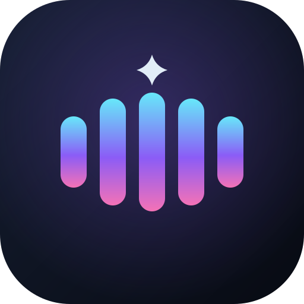

星海 FM · 图标方案
三版都是 512×512 圆角方，渐变沿用界面的青 → 紫 → 粉。SVG 可任意缩放，下面的小尺寸就是同一个文件渲染的。
A · 星浪
四角星 + 波纹，最直白：星与海
星海 FM
LOCAL AUDIO LIBRARY
B · 声格（采用）
五根声波柱 + 星点，延续侧栏的跳动均衡器

星海 FM
LOCAL AUDIO LIBRARY
C · 星环
断口圆环 + 星，偏"轨道 / 信号"
星海 FM
LOCAL AUDIO LIBRARY
浅色背景下的可辨识度（深色底图标的天然弱项，若要多端复用需另出浅色版）